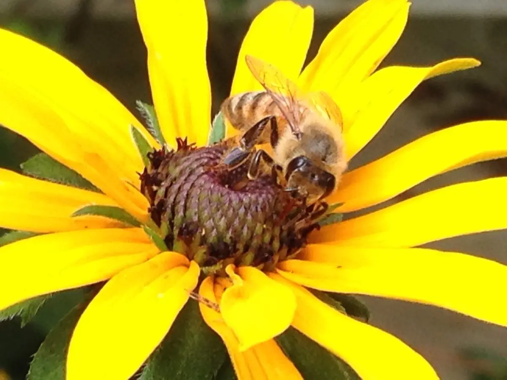
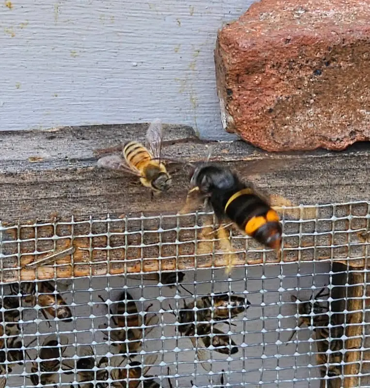
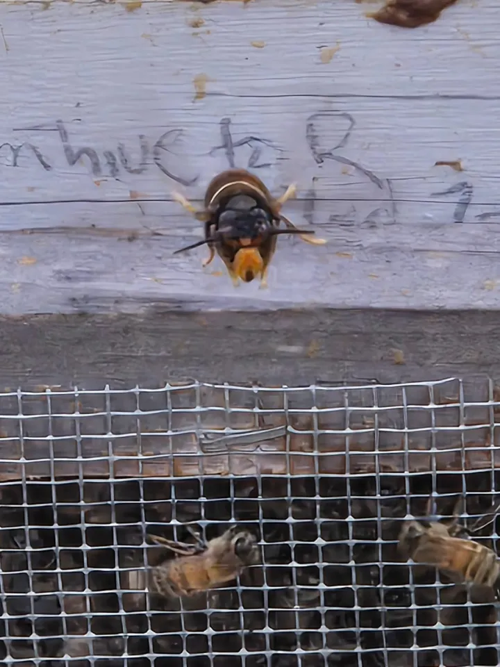
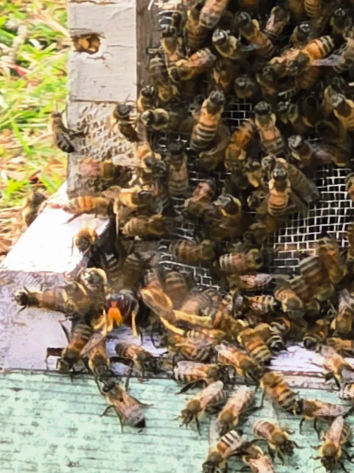
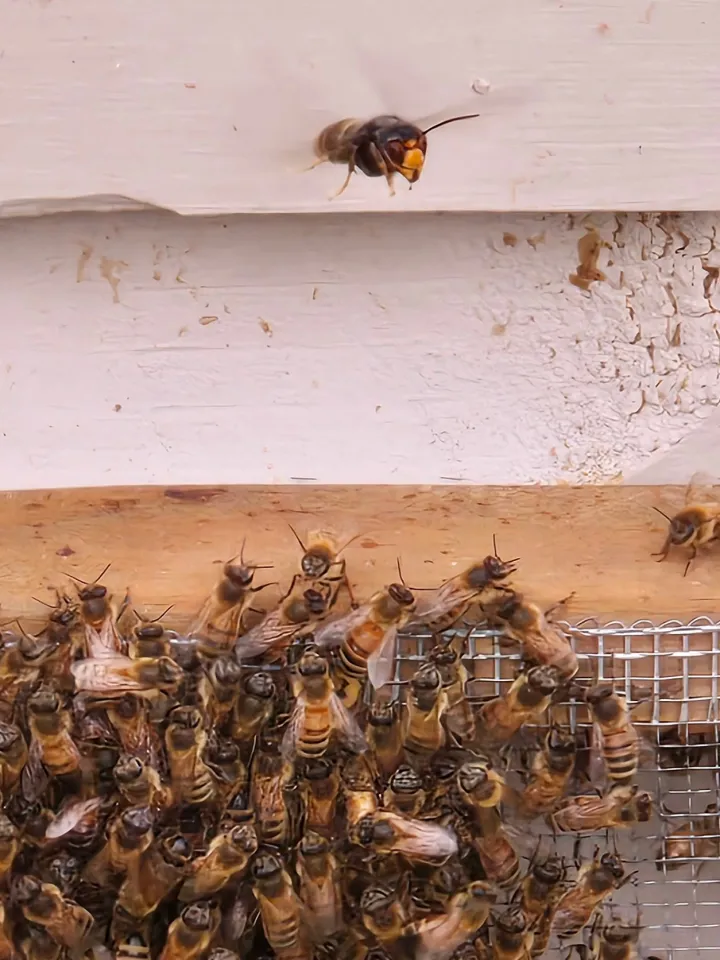
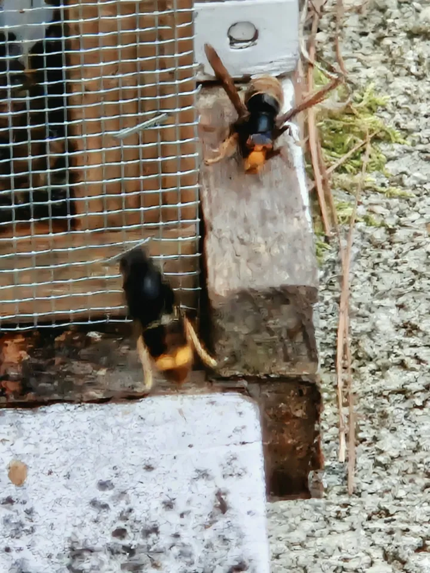
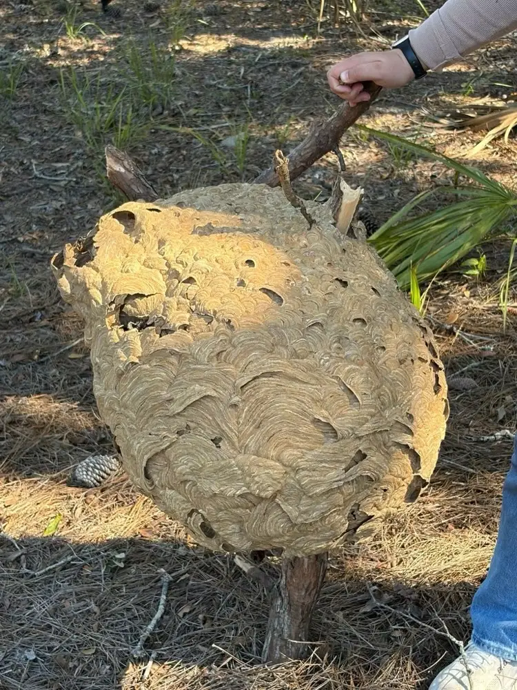
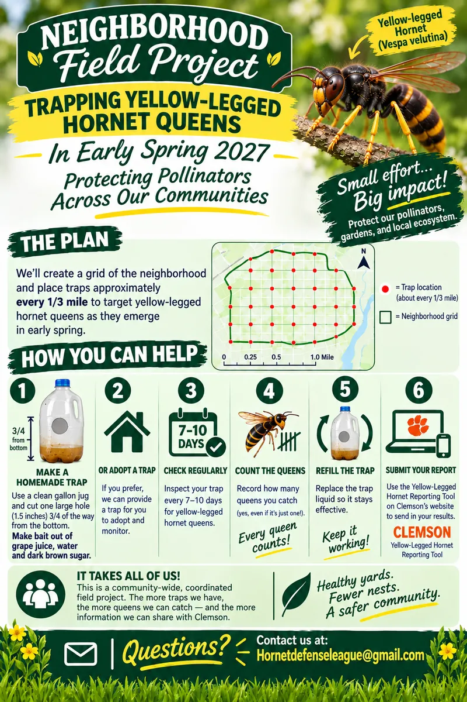
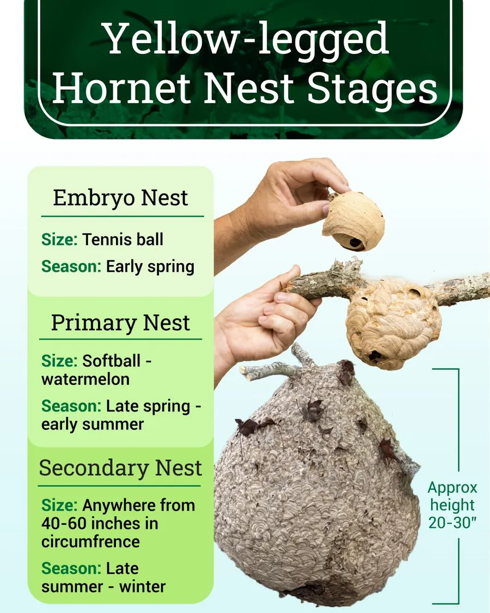

Yellow-legged hornet
- Black thorax (middle section)
- Mostly dark abdomen with a yellow-orange tip
- Legs with bright yellow ends
- Orange-yellow face
- Workers about 3/4 inch, queens up to about 1 1/4 inches
- Large, round nests, often high in trees
Protect · Educate · Research · Engage
An invasive hornet that hunts honeybees is spreading across South Carolina and Georgia, and the South Carolina Lowcountry is the epicenter. We help communities spot it, report it, and protect their hives.
The mission of the Hornet Defense League is to protect honeybees and native pollinators from the invasive Yellow-Legged Hornet (Vespa velutina) through public education, increased awareness, community engagement in citizen science, and collaborative, open-source field research.
Our efforts focus on implementing and evaluating existing hornet trapping, tracking, and mitigation techniques while developing innovative approaches informed by hands-on field research and behavioral observations. Our goal is to advance practical, cost-effective, and time-efficient strategies that protect honeybee colonies, reduce predation on honeybees and native pollinators, and limit the population growth and spread of this invasive species.
By bringing together individuals, community groups, beekeepers, researchers, and volunteers, we strive to create a coordinated, science-based approach to protecting pollinators and preserving our ecosystems.

The yellow-legged hornet (Vespa velutina) is native to Southeast Asia. It has already spread through much of Europe, and in August 2023 it was confirmed in the United States for the first time, near Savannah, Georgia. [1]
Hornets wait in the air outside a hive and pick off returning foragers in mid-flight. This hunting behavior is called hawking. [7] Even when they are not catching bees, their presence at the entrance keeps the colony from going out to forage, so the hive slowly weakens and starves. A handful of hornets can empty an apiary in days. [2]
Asian honeybees evolved ways to fight back against this hornet. The European honeybees kept by American beekeepers did not, which leaves them especially exposed. [2]
One hornet colony eats a huge number of insects in a single season, including native pollinators. Fewer pollinators means poorer harvests for crops that depend on them, which affects farmers, gardeners, and food prices for everyone. [3] [4]
The South Carolina Lowcountry is the epicenter. South Carolina recorded its first hornet in November 2023. By late 2025 nests had turned up outside the Lowcountry in York County, and in October 2026 the first nests were found in Anderson and Kershaw Counties. [6] [7]
In Georgia, where the hornet was first found, crews destroyed 5 nests in 2023 and 47 in 2024, and finds have kept climbing since. [5] North Carolina is asking residents to report sightings too.

Nest counts as of October 27, 2026. Source: Hornet Herald. [7]
If you see a hornet doing this in front of a hive, take a photo and report it.




Photos provided by the Hornet Defense League.
The northern giant hornet (once nicknamed the "murder hornet") was found in Washington State in 2019. Thanks largely to public reports, state crews tracked down and destroyed four nests, and in December 2024 Washington and USDA declared it eradicated from the United States. Early reporting works. [8]
Bigger, with a reddish-brown and black thorax and a mostly yellow abdomen. Nests hidden in hollow trees or walls.
Very large (up to 2 inches) solitary wasp that digs burrows in the ground. Rarely stings people.
Black and white, not yellow. Builds round, exposed nests and is the most common false alarm.
Identification details from Penn State Extension and USDA APHIS. [9] [3]

Officials need a photo to confirm a sighting. Note the location, and do not disturb nests. State responders will handle removal.
You do not need to be a beekeeper to help. Here are three ways to pitch in.
Baited traps are used to detect hornets in an area. [7] You can build one at home and check it regularly.
All it takes is a clear plastic jug, a few basic tools, and a bait made of grape juice, dark brown sugar, and water.
Over 80% of nests discovered in South Carolina have been reported by citizens.
In spring, check sheltered spots such as under rooflines and eaves for small starter nests, about the size of a ping pong ball to a tennis ball. Later in the year colonies move into much larger nests, often high in trees. [7] Never disturb a nest. Take a photo and report it.
In spring, each queen comes out of overwintering and starts a new nest on her own. [7] A queen trapped then cannot go on to build one.
Join our Neighborhood Field Project in early spring 2027. We will lay out a grid of each neighborhood and place a trap about every 1/3 mile. Make your own trap or adopt one from us, check it every 7 to 10 days, count the queens, and send your results to Clemson.


Never disturb a nest at any stage. Take a photo, note the location, and report it.
Everything on this page comes from these official and expert sources. Visit them for the latest numbers and guidance.
The Hornet Defense League is an independent nonprofit. We link to these agencies and universities as public resources and are not affiliated with or endorsed by them.
Your gift funds traps, field research, and community education to keep this hornet from spreading. The Hornet Defense League is a 501(c)(3) nonprofit, so donations are tax-deductible to the extent allowed by law.
Donate onlineSecure online giving through Zeffy. Prefer to give by check? Email Hornetdefenseleague@gmail.com.
Hornet Defense League is a 501(c)(3) nonprofit. EIN 42-5169018.
Want to volunteer, host a talk, partner with us, or ask a question? We would love to hear from you.
To report a hornet sighting, please use your state's reporting form so officials see it right away.